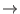

void route(const X& value, Devs<X>* model, Bag<Event<X> >& r)
The value argument is the object to route, the model argument is the Network or Atomic model that is the source of the value object, and the r argument is a bag to be filled with models that should receive the value object as input. Each target is described by an Event object that carries two pieces of information: a pointer to the model that is the target and the object to be delivered to that target. The simulator uses the Event objects in one of three ways depending on the relationship between the source of the object and its target. These uses are
The simplest example of the route method converts output from one Atomic component into input for another Atomic component. Figure 5.1 illustrates this case. The simulator begins by invoking the output_func method of Atomic model
Two things are done by the route method to cause Atomic model  to receive the output object from
to receive the output object from  . First, an Event object is created that contains the output object and a pointer to
. First, an Event object is created that contains the output object and a pointer to  . Second, this Event object is inserted into the Bag r. If we suppose, for the sake of illustration, that input and output objects have type int, then the route method for this example is
. Second, this Event object is inserted into the Bag r. If we suppose, for the sake of illustration, that input and output objects have type int, then the route method for this example is
void route(const int& value, Devs<int>* model, Bag<Event<int> >& r) {
if (model == A) {
Event<int> e(B,value);
r.insert(e);
}
}
where
A more complicated example is the network receiving input destined for one of its atomic components. This can happen, for instance, when the network is a component of another network. Suppose the input to the network is to become input for Atomic model  . Figure 5.2 extends Fig. 5.1 to include this connection.
. Figure 5.2 extends Fig. 5.1 to include this connection.
When an event appears at the input of the network, the simulator calls the Network's route method with the following arguments:
void route(const int& value, Devs<int>* model, Bag<Event<int> >& r) {
if (model == A) {
Event<int> e(B,value);
r.insert(e);
}
else if (model == this) {
Event<int> e(A,value);
r.insert(e);
}
}
For a complete example, the network is extended to include two more connections: a connection from the output of model
void route(const int& value, Devs<int>* model, Bag<Event<int> >& r) {
if (model == A) {
Event<int> e(B,value);
r.insert(e);
}
else if (model == this) {
Event<int> e(A,value);
r.insert(e);
}
else if (model == B) {
Event<int> e1(this,value);
Event<int> e2(A,value);
r.insert(e1);
r.insert(e2);
}
}
Though not demonstrated above, the route method is allowed to modify the value object before sending it to a target. This can be useful in some instances.
void getComponents(Set<Devs<X>*>& c)where c is the set to be filled. The code below shows how this method is implemented for the two component network shown in Fig. 5.3. This code, of course, also works for the networks shown in Figs. 5.2 and 5.1.
void getComponents(Set<Devs<int>*>& c) {
c.insert(A);
c.insert(B);
}
There are no special rules for simulating hierarchical models. The simulator considers the entire collection of atomic models when determining the next event time, output from atomic models are recursively routed to their atomic destinations, and the state transitions and garbage collection are performed over the complete set of active atomic components. Hierarchies of network models are a convenient organizing tool for the modeler, but the simulator flattens (indirectly, via its recursive routing of events) multi-level networks during simulation.
Algorithm 1 sketches the simulation procedure. Note that the procedure for simulating atomic models (see section 4) is embedded in the procedure for simulating network models. The rules for atomic models do not change: each atomic model sees a sequence of input events and produces a sequence of output events just as before. The only difference here is that the input events are created by other atomic models, and so the input sequence for each atomic model is constructed as the simulation progresses.
The SimpleDigraph has two methods for building a network. The add method takes an Atomic or Network model and adds it to the set of components. The couple method accepts a pair of components and connects the first to the second. Below is the class definition for the model. Note that it has a template parameter for setting its input and output type.
template <class VALUE> class SimpleDigraph: public Network<VALUE> {
public:
/// A component of the SimpleDigraph model
typedef Devs<VALUE> Component;
/// Construct a network with no components
SimpleDigraph():Network<VALUE>(){}
/// Add a model to the network.
void add(Component* model);
/// Couple the source model to the destination model
void couple(Component* src, Component* dst);
/// Assigns the model component set to c
void getComponents(Set<Component*>& c);
/// Use the coupling information to route an event
void route(const VALUE& x, Component* model, Bag<Event<VALUE> >& r);
/// The destructor destroys all of the component models
~SimpleDigraph();
private:
// Component model set
Set<Component*> models;
// Coupling information
std::map<Component*,Bag<Component*> > graph;
};
The SimpleDigraph has two member variables. The first is a set of pointers to the components of the network. These are stored in the Set called models. The components can be Atomic objects, Network objects, or both. These components of the SimpleDigraph are the nodes of its directed graph. The second member variable is the network's links. These are stored in the map called graph.
The SimpleDigraph has four methods plus the required route and getComponents. One of these is the constructor, which creates an empty network. Another is the destructor, which deletes all of the network's components. The remaining two are add and couple.
The add method does three things. First, it checks that the network is not being added to itself. This is illegal and will cause the simulator to throw an exception. Next, it adds the new component to its set of components. Last, the SimpleDigraph makes itself the component's parent. This needed so that the simulator can climb up and down the model tree. If this step is omitted then the recursive routing of events will fail. Here is the implementation of the add method.
template <class VALUE>
void SimpleDigraph<VALUE>::add(Component* model) {
assert(model != this);
models.insert(model);
model->setParent(this);
}
The couple method does two things. First, it adds the source (src) and destination (dst) models to the set of components. We could simply have required that the user call the add method before calling the couple method, but adding the components here doesn't hurt and might prevent an error. Second, couple adds the src  dst link to the graph. Notice that the SimpleDigraph itself is a node in the network, but it is not in the set of components!. Components that are connected to the network cause outputs from the network. Similarly, connecting the network to a component causes input to the network to become input to the component. Here is the implementation of the couple method.
template <class VALUE>
void SimpleDigraph<VALUE>::couple(Component* src, Component* dst) {
if (src != this) add(src);
if (dst != this) add(dst);
graph[src].insert(dst);
}
Of the two required methods, route is the more complicated. The arguments to route are an object to be routed, the network element (i.e., either the SimpleDigraph or one of its components) that created that object, and the Bag to be filled with Event objects that indicate the object's receivers. The method begins by finding the collection of components that are connected to the source of the object. Next, it iterates through this collection and for each receiver adds an Event to the Bag of receivers. When this is done the method returns. The implementation is below.
template <class VALUE>
void SimpleDigraph<VALUE>::route(const VALUE& x, Component* model,Bag<Event<VALUE> >& r) {
// Find the list of target models and ports
typename std::map<Component*,Bag<Component*> >::iterator graph_iter;
graph_iter = graph.find(model);
// If no target, just return
if (graph_iter == graph.end()) return;
// Otherwise, add the targets to the event bag
Event<VALUE> event;
typename Bag<Component*>::iterator node_iter;
for (node_iter = (*graph_iter).second.begin();
node_iter != (*graph_iter).second.end(); node_iter++) {
event.model = *node_iter;
event.value = x;
r.insert(event);
}
}
The second required method, getComponents, is trivial. If we had used some collection other than a Set to store the components, then the method would have needed to explicitly insert every component model into the Set c. But because models and c are both Set objects, and the Set has an assignment operator, a call to that operator is sufficient.
template <class VALUE>
void SimpleDigraph<VALUE>::getComponents(Set<Component*>& c) {
c = models;
}
The constructor and the destructor complete the class. The constructor only calls the superclass constructor. The destructor deletes the component models. Its implementation is shown below.
template <class VALUE>
SimpleDigraph<VALUE>::~SimpleDigraph() {
typename Set<Component*>::iterator i;
for (i = models.begin(); i != models.end(); i++) {
delete *i;
}
}
// Create a digraph model whose components use PortValue<Customer*> // objects as input and output objects. adevs::Digraph<Customer*> store; // Create and add the component models Clerk* clrk = new Clerk(); Generator* genr = new Generator(argv[1]); store.add(clrk); store.add(genr); // Couple the components store.couple(genr,genr->arrive,clrk,clrk->arrive);
The components of a Digraph must use adevs::PortValue objects for their input and output type. The Digraph is a template class with two template parameters. The first parameter is the type of object used for a value in its PortValue objects. The second parameter is the type of object used for a port in its PortValue objects. The port parameter is of type `int' by default.
The Digraph has two methods that are used to construct a network. The add method adds a component to the network. The argument to the add method is the model to be included in the network. The couple method connects components of the network. The first two arguments to the couple method are the source model and port. The second two arguments are the destination model and port.
The effect of coupling a source model to a destination model is that output produced by the source model on the source port appears as input to the destination model on the destination port. To illustrate this, consider the output function of the Generator model shown in Fig. 5.5.
void Generator::output_func(Bag<IO_Type>& yb)
{
// First customer in the list is produced as output
IO_Type output(arrive,arrivals.front());
yb.insert(output);
}
This output function places a value of type `Customer*' on the ``arrive'' port of the Generator; recall that 'IO_Type' is a typedef for `PortValue<Customer*>'. A corresponding PortValue object appears in the input bag of the Clerk. The value attribute of the PortValue object received by the clerk points to the Customer object created by the Generator. The port attribute of the PortValue object is the Clerk's ``arrive" port.
The components for the network need not consist only of Atomic models; the Digraph can also have other Network models as its components. For instance, suppose we want to model a convenience store that has two clerks. When customers are ready to pay their bill, they enter the shortest line. To build this model, we reuse the Clerk, Generator and Observer models introduced in section 3. We add a model called Decision of how customers select a line.
The code for the Decision model is shown below. This model has two output ports, one for each line, and there are three input ports. One input port accepts new customers. The others are used to track the number of customers departing each line: a customer departing either clerk generates an event on the appropriate input port. In this way, the model is able to track the number of customers in each line and assign new customers to the shortest one. Here is the class definition
#include "adevs.h"
#include "Customer.h"
#include <list>
// Number of lines to consider.
#define NUM_LINES 2
class Decision: public adevs::Atomic<IO_Type>
{
public:
/// Constructor.
Decision();
/// Internal transition function.
void delta_int();
/// External transition function.
void delta_ext(double e, const adevs::Bag<IO_Type>& x);
/// Confluent transition function.
void delta_conf(const adevs::Bag<IO_Type>& x);
/// Output function.
void output_func(adevs::Bag<IO_Type>& y);
/// Time advance function.
double ta();
/// Output value garbage collection.
void gc_output(adevs::Bag<IO_Type>& g);
/// Destructor.
~Decision();
/// Input port that receives new customers
static const int decide;
/// Input ports that receive customers leaving the two lines
static const int departures[NUM_LINES];
/// Output ports that produce customers for the two lines
static const int arrive[NUM_LINES];
private:
/// Lengths of the two lines
int line_length[NUM_LINES];
/// List of deciding customers and their decision.
std::list<std::pair<int,Customer*> > deciding;
/// Delete all waiting customers and clear the list.
void clear_deciders();
/// Returns the arrive port associated with the shortest line
int find_shortest_line();
};
and here is the implementation
#include "Decision.h"
#include <iostream>
using namespace std;
using namespace adevs;
// Assign identifiers to ports. Assumes NUM_LINES = 2.
// The numbers are selected to allow indexing into the
// line length and port number arrays.
const int Decision::departures[NUM_LINES] = { 0, 1 };
const int Decision::arrive[NUM_LINES] = { 0, 1 };
// Inport port for arriving customer that need to make a decision
const int Decision::decide = NUM_LINES;
Decision::Decision():
Atomic<IO_Type>()
{
// Set the initial line lengths to zero
for (int i = 0; i < NUM_LINES; i++)
{
line_length[i] = 0;
}
}
void Decision::delta_int()
{
// Move out all of the deciders
deciding.clear();
}
void Decision::delta_ext(double e, const Bag<IO_Type>& x)
{
// Assign new arrivals to a line and update the line length
Bag<IO_Type>::const_iterator iter = x.begin();
for (; iter != x.end(); iter++)
{
if ((*iter).port == decide)
{
int line_choice = find_shortest_line();
Customer* customer = new Customer(*((*iter).value));
pair<int,Customer*> p(line_choice,customer);
deciding.push_back(p);
line_length[p.first]++;
}
}
// Decrement the length of lines that had customers leave
for (int i = 0; i < NUM_LINES; i++)
{
iter = x.begin();
for (; iter != x.end(); iter++)
{
if ((*iter).port < NUM_LINES)
{
line_length[(*iter).port]--;
}
}
}
}
void Decision::delta_conf(const Bag<IO_Type>& x)
{
delta_int();
delta_ext(0.0,x);
}
double Decision::ta()
{
// If there are customers getting into line, then produce output
// immediately.
if (!deciding.empty())
{
return 0.0;
}
// Otherwise, wait for another customer
else
{
return DBL_MAX;
}
}
void Decision::output_func(Bag<IO_Type>& y)
{
// Send all customers to their lines
list<pair<int,Customer*> >::iterator i = deciding.begin();
for (; i != deciding.end(); i++)
{
IO_Type event((*i).first,(*i).second);
y.insert(event);
}
}
void Decision::gc_output(Bag<IO_Type>& g)
{
Bag<IO_Type>::iterator iter = g.begin();
for (; iter != g.end(); iter++)
{
delete (*iter).value;
}
}
Decision::~Decision()
{
clear_deciders();
}
void Decision::clear_deciders()
{
list<pair<int,Customer*> >::iterator i = deciding.begin();
for (; i != deciding.end(); i++)
{
delete (*i).second;
}
deciding.clear();
}
int Decision::find_shortest_line()
{
int shortest = 0;
for (int i = 0; i < NUM_LINES; i++)
{
if (line_length[shortest] > line_length[i])
{
shortest = i;
}
}
return shortest;
}
The block diagram of the store and its multiple clerks is shown in Fig. 5.6. The external interface for this block diagram is identical to that of the clerks. It has the same inputs and outputs as the Clerk and Clerk2 models, and we can therefore use the Generator and Observer models to conduct the same experiments as before.
The external ``arrive" input of the multi-clerk model is connected to the ``decide" input of the Decision model. The ``depart" output ports of each of the Clerk models is connected to the external ``arrive" output port of the multi-clerk model. The Decision model has two output ports, each producing customers for a distinct clerk. These output ports are coupled to the ``arrive" port of the appropriate clerk. The Clerk's ``depart" output ports are coupled to the appropriate ``departures" port of the decision model.
The multi-clerk model is implemented by deriving a new class from Digraph. The constructor of this new class creates and adds the component models and establishes their interconnections. Here is the header file for this new multi-clerk model.
#include "adevs.h"
#include "Clerk.h"
#include "Decision.h"
/**
A model of a store with multiple clerks and a "shortest line"
decision process for customers.
*/
class MultiClerk: public adevs::Digraph<Customer*>
{
public:
// Model input port
static const int arrive;
// Model output port
static const int depart;
// Constructor.
MultiClerk();
// Destructor.
~MultiClerk();
};
And here is the source file
#include "MultiClerk.h"
using namespace std;
using namespace adevs;
// Assign identifiers to I/O ports
const int MultiClerk::arrive = 0;
const int MultiClerk::depart = 1;
MultiClerk::MultiClerk():
Digraph<Customer*>()
{
// Create and add component models
Decision* d = new Decision();
add(d);
Clerk* c[NUM_LINES];
for (int i = 0; i < NUM_LINES; i++)
{
c[i] = new Clerk();
add(c[i]);
}
// Create model connections
couple(this,this->arrive,d,d->decide);
for (int i = 0; i < NUM_LINES; i++)
{
couple(d,d->arrive[i],c[i],c[i]->arrive);
couple(c[i],c[i]->depart,d,d->departures[i]);
couple(c[i],c[i]->depart,this,this->depart);
}
}
MultiClerk::~MultiClerk()
{
}
Notice that the MultiClerk destructor does not delete its component models. This is because the components are adopted by the base class when they are added using the Digraph's add method. Consequently, the component models are deleted by the base class destructor, rather than the destructor of the derived class.
Our implementation of the Game of Life has two parts: atomic models that implement the individual cells and a CellSpace that contains the cells. The CellSpace is a type of Network, and its components exchange CellEvent objects that have four attributes: the x, y, and z coordinates of the target cell (the cell space can have three dimensions; the Game of Life uses just two) and the object to deliver to that target. The CellEvent class is a template class whose template argument sets the type of object that the event delivers. The size of the CellSpace is determined when the CellSpace object is created, and it has methods for adding and retrieving cells by location.
The Atomic cells in our Game of Life have two state variables: the dead or alive status of the cell and its count of living neighbors. Two methods are implemented to test the death and rebirth rules, and the cell sets its time advance to 1 whenever a rule is satisfied.
The output of the cell is its new dead or alive state. In order to produce properly targeted CellEvents, each cell knows its own location in the cell space. The internal transition function causes the cell to change its dead/alive state. The external transition function updates the cell's count of living neighbors as those neighbors change their dead/alive state. Here is header file for our Game of Life cell.
/// Possible cell phases
typedef enum { Dead, Alive } Phase;
/// IO type for a cell
typedef adevs::CellEvent<Phase> CellEvent;
/// A cell in the Game of Life.
class Cell: public adevs::Atomic<CellEvent> {
public:
/**
Create a cell and set the initial state.
The width and height fields are used to determine if a
cell is an edge cell. The last phase pointer is used to
visualize the cell space.
*/
Cell(long int x, long int y, long int width, long int height,
Phase phase, short int nalive, Phase* vis_phase = NULL);
... Required Adevs methods and destructor ...
private:
// location of the cell in the 2D space
long int x, y;
// dimensions of the 2D space
static long int w, h;
// Current cell phase
Phase phase;
// number of living neighbors.
short int nalive;
// Output variable for visualization
Phase* vis_phase;
// Returns true if the cell will be born
bool check_born_rule() const {
return (phase == Dead && nalive == 3);
}
// Return true if the cell will die
bool check_death_rule() const {
return (phase == Alive && (nalive < 2 || nalive > 3));
}
};
The template argument supplied to the base Atomic class is a CellEvent whose value attribute has the type Phase. The check_born_rule method tests the rebirth condition and the check_death_rule method tests the death condition. The appropriate rule, as determined by the cell's dead or alive status, is used in the time advance, output, and internal transition methods (i.e., if the cell is dead then check the rebirth rule; if alive, check the death rule). The number of living cells is updated by the cell's delta_ext method when neighboring cells report a change in their state. Here are the Cell's method implementations.
Cell::Cell(long int x, long int y, long int w, long int h,
Phase phase, short int nalive, Phase* vis_phase):
adevs::Atomic<CellEvent>(),x(x),y(y),phase(phase),nalive(nalive),vis_phase(vis_phase) {
// Set the global cellspace dimensions
Cell::w = w; Cell::h = h;
// Set the initial visualization value
if (vis_phase != NULL) *vis_phase = phase;
}
double Cell::ta() {
// If a phase change should occur then change state
if (check_death_rule() || check_born_rule()) return 1.0;
// Otherwise, do nothing
return DBL_MAX;
}
void Cell::delta_int() {
// Change the cell state if necessary
if (check_death_rule()) phase = Dead;
else if (check_born_rule()) phase = Alive;
}
void Cell::delta_ext(double e, const adevs::Bag<CellEvent>& xb) {
// Update the living neighbor count
adevs::Bag<CellEvent>::const_iterator iter;
for (iter = xb.begin(); iter != xb.end(); iter++) {
if ((*iter).value == Dead) nalive--;
else nalive++;
}
}
void Cell::delta_conf(const adevs::Bag<CellEvent>& xb) {
delta_int();
delta_ext(0.0,xb);
}
void Cell::output_func(adevs::Bag<CellEvent>& yb) {
CellEvent e;
// Assume we are dying
e.value = Dead;
// Check in case this in not true
if (check_born_rule()) e.value = Alive;
// Set the visualization value
if (vis_phase != NULL) *vis_phase = e.value;
// Generate an event for each neighbor
for (long int dx = -1; dx <= 1; dx++) {
for (long int dy = -1; dy <= 1; dy++) {
e.x = (x+dx)%w;
e.y = (y+dy)%h;
if (e.x < 0) e.x = w-1;
if (e.y < 0) e.y = h-1;
// Don't send to self
if (e.x != x || e.y != y)
yb.insert(e);
}
}
}
The output_func method shows how a cell sends messages to its neighbors. The nested for loops create a CellEvent targeted at each adjacent cell. The location of the targeted cell is written to the x, y, and z attributes of the CellEvent object. Just like arrays, the locations range from zero to the cell space's size minus one. The CellSpace routes the CellEvent objects to their targets. However, if the target of the CellEvent is outside of the cell space, then the CellSpace itself will produce the CellEvent as an output.
The remainder of the simulation program looks very much like the simulation programs that we've seen. A CellSpace object is created and we add cells to it. Then a Simulator object is created and a pointer to the CellSpace is passed to the Simulator's constructor. Last, we execute events until our stopping criteria is met. The execution part is already familiar, so let's just focus on creating the CellSpace. Here is the code snippet that performs the construction.
// Create the cellspace model
cell_space = new adevs::CellSpace<Phase>(WIDTH,HEIGHT);
for (int x = 0; x < WIDTH; x++) {
for (int y = 0; y < HEIGHT; y++) {
// Count the living neighbors
short int nalive = count_living_cells(x,y);
// The 2D phase array contains the initial Dead/Alive state of each cell
cell_space->add(new Cell(x,y,WIDTH,HEIGHT,phase[x][y],nalive,&(phase[x][y])),x,y);
}
}
Just as with the Digraph class, the CellSpace template argument determines the value type for the CellEvent objects used as input and output. The CellSpace constructor sets the dimensions of the space. Every CellSpace is three dimensional, and the constructor accepts three arguments for its x, y, and z dimensions. Omitted arguments default to 1. The signature of the constructor is
CellSpace(long int width, long int height = 1, long int depth = 1)
Components are added to the cellspace with the add method. This method places a component at a specific x, y, and z location. Its signature is
void add(Cell* model, long int x, long int y = 0, long int z = 0)where Cell is a Devs (atomic or network) by the type definition
typedef Devs<CellEvent<X> > Cell;Also like the Digraph, the CellSpace deletes its components when it is deleted.
The CellSpace has five methods for retrieving cells and the dimensions of the cell space. These are more or less self-explanatory; the signatures are shown below.
const Cell* getModel(long int x, long int y = 0, long int z = 0) const; Cell* getModel(long int x, long int y = 0, long int z = 0); long int getWidth() const; long int getHeight() const; long int getDepth() const;
The Game of Life produces a surprising number of distinct patterns. Some of these patterns are fixed and unchanging. Others oscillate, cycling through a set of patterns that always repeats itself. Still others seem to crawl or fly. One common pattern is the Block, which is shown in Fig. 5.7. Our discrete event implementation of the Game of Life doesn't do any work when simulating a Block. None of the cells in a Block change in any way: their states are constant and so are their neighbor counts.
The confluent transition function plays an important role in the Blinker. All but the first row in Table 5.1 has simultaneous input and output, which means that an internal and external event coincide. Consequently, the next state of the cell is determined by its delta_conf method. It is also important that the input and output bags carry multiple values. The external transition function (which is used in defining the confluent transition function) must be able to compute the number of living neighbors before determining its next state. If input events were provided one at a time (e.g., if the input bag were replaced by a single input event), then our discrete event Game of Life would be much more difficult to implement.